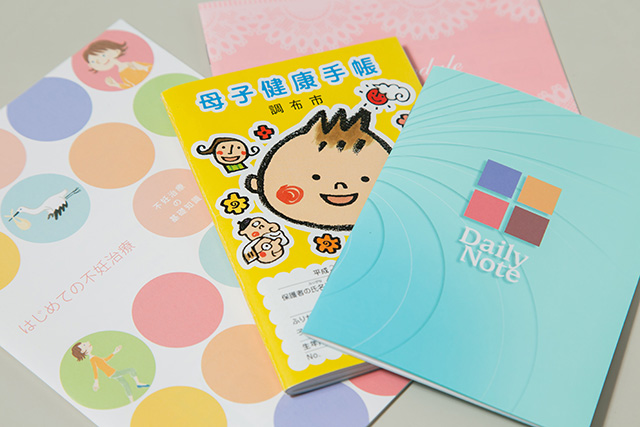
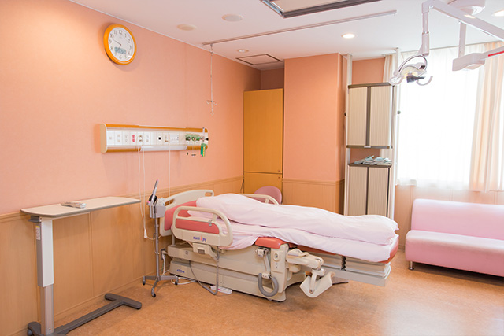
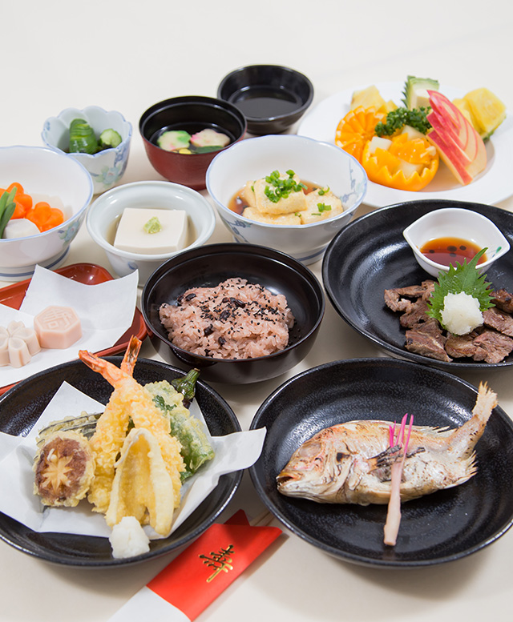
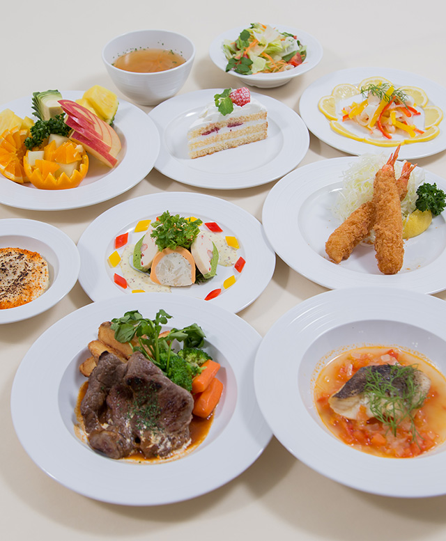

入院準備
持ち物

８ヶ月にはいりましたら、必需品をそろえ、出産間近になったら、当院への道順、電話番号等を分かりやすい所に貼り、荷物
なども誰にでも分かるようにしておきましょう。
- 母子手帳、診察券、保険証（印鑑） 母子手帳は入院時すぐにお預かりします。取り出しやすいようにしておきましょう。
- 出産後の寝衣（前開きのもの）２枚くらい
- 前開き産褥ショーツ 数枚 （診察の時にあると便利です）
- 授乳用ブラジャー 数枚 （ワイヤーの入っていないもの）
- スリッパ
- ナプキン （産後すぐのものは、当院で準備してありますので、夜用のナプキンで充分です）
- 退院時のベビー服、オムツ （入院中は当院のものを使用して頂きます。）
- 洗面用具、タオル類、baby用ガーゼハンカチ
- 腹帯 １枚 （お腹を冷やさないようにしていただきたいので普通の腹巻でもOKです。無い方は冷やさない工夫を）
※骨盤ベルト・さらし・ニッパーいずれか1つあると骨盤を整えてあげるのに便利です。
（腹帯、骨盤ベルト・さらし・ニッパーは必ずしも必要ではありません。）
- ＊荷物はなるべくひとつにまとめ、家族のわかりやすいところに置いておきます。
- ＊妊娠３６週になったら再度確認しておきましょう。
- ＊病院で用意しているもの：お産用ショーツ、ナプキンM・L、お産直後用ショーツ、清浄綿、授乳用パット、お臍の消毒セット、おしりふき
診断書等の書類について
出生証明書はご出産後医師より発行されます。
他の証明書をご希望の方は1階受付にてお申し込みください。
＊書類受付時間：外来受付時間内
入院預り金
- ◇保険適応の入院の方・・・10万円
- ◇自費入院の方・・・20万
- ◇分娩入院の方・・・Ａ.18万円+直接支払手続き B.60万円 (ABは選択自由です。)
- ※保証金をお預かりした方には預かり証を発行いたします。
退院の際に返金・精算をする場合に必要になりますので、紛失しないようにお願いいたします。
入院生活の決まり
入院中の一日のスケジュール
| 6:00 |
起床（前日の尿、便の回数を伺います）
検温 |
| 7:30 |
朝食 |
| 9:00 |
清潔ケア（シャワー浴・全身清拭・洗髪など）※午後になることもあります。 |
| 12:00 |
昼食 |
| 14:00 |
〜16:00までの間 検温 |
| 18:00 |
夕食 |
| (19:00 |
検温) |
| 21:00 |
消灯 |
面会時間について
分娩当日：分娩当日に関しては、面会時間以外でも、ご面会・お付き添いが可能です。
分娩後：平日 午後２時〜午後８時まで 日曜・祭日 午前10時〜午後8時まで
- ※咳や鼻水がでている等体調のすぐれない方のご面会はご遠慮下さい。お産後は休息が必要です。「ご家族様以外のご面会は短時間で」が理想です。
洗濯について
ご自宅もしくは５階のコインランドリーをご利用ください。洗剤・小銭をご用意ください。
（ご利用時間は午前６時〜午後９時の間でお願いいたします。）
外出・外泊について
医師の許可が必要になりますので、担当看護師にご相談下さい。
付き添いについて
原則として、分娩後のお付き添いはご遠慮いただいておりますが、特に希望される場合には、主治医または担当看護師にご相談下さい。
喫煙について
全館館内（敷地内含む）禁煙とさせていただいております。
貴重品について
多額の現金・通帳・貴金属などの病室へのお持込はご遠慮下さい。
- ※患者さんの所有物の紛失に関しましては、当院では責任を負いかねますので、貴重品の管理には十分ご注意下さい。
その他
- 事故防止のため、ご入院からご退院までお名前の入ったリストバンドをお母様・お子様に装着させて頂いておりますので、ご協力お願いいたします。
- LDR病棟入り口は、部屋に備え付けの専用カードキーをご使用下さい。カードキーはお母様のみのご使用とし、退院時には元の場所にご返却をお願いいたします。
- 携帯電話は他の方のご迷惑にならないよう室内でご使用頂き、大部屋での通話はご遠慮ください。
- 非常災害時は慌てず、職員の指示に従ってください。
病室について
快適な出産のためにLDRを完備しています。

LDRとは、L=Labor（陣痛）、D=Delivery（分娩）、R=Recovery（回復室）の頭文字をとったもので、通常では、お産は陣痛室を経て分娩室へと移り出産、その後病室に戻るといういくつかの部屋で行われていた施術を同じお部屋で行う出産方法のことです。
LDRルームは一見普通の病室ですが、陣痛・分娩などの出産を行うために必要な機器が取り揃えられており、ベッドが分娩台に形を変えられ、部屋を移動することなく個室で出産を行えるため、産婦への負担を軽くし、寝室にいるような雰囲気の中で、出産をすることが出来ます。
食事について
当院では、出産後の体力改善や良い母乳のために、おいしくて栄養バランスの良い食事を提供しています。
産後の体力の回復には･･･
良質のたんぱく質、ビタミン、鉄分、ミネラルは、産後の体力の回復だけではなく母乳にとっても必要な栄養素なので、毎日の食事で効果的に摂取できるような献立にしています。
良い母乳のためには･･･
動物性脂肪を取りすぎると母乳の質が変わり、乳腺が詰まって出にくくなる、
乳腺炎になるといったことがあるため、動物性脂肪の少ない食品を選んでいます。また、刺激物を多く摂ると母乳の味が変わっ
てしまうことがあるため、刺激の強いものはできるだけ少量にしています。
母乳には必要な水分･･･
母乳は約９０％が水分のため、母乳として水分が出ていき、お母さんはのどが渇きやすくなります。良い母乳をたくさん出すためには、お母さんの水分補給が非常に重要です。豆乳、100％ジュースや、カフェインレスのお茶などを提供し、十分な水分補給を行っていただけるようにしています。
お祝い膳について
出産後のお祝い膳は洋食・和食をご用意しており、どちらかお好きな方を選んでいただけます。
ご家族と一緒に召し上がっていただくことも可能です。
お祝い膳（和食）

- お赤飯
- 鯛の尾頭付き
- てんぷら盛り合わせ
- 揚げ出し豆腐
- 煮物（盛り合わせ）
- 酢の物
- ゴマ豆腐
- 清まし汁
- 和菓子
- フルーツ盛り合わせ
- 飲み物（お茶）
お祝い膳（洋食）

- パン又はライス
- メバルのポワレ
- サーロインステーキ
- テリーヌ
- エビフライ
- チキングラタン
- シーフードマリネ
- コンソメスープ
- サラダ
- フルーツ盛り合わせ
- ショートケーキ
- 飲み物（コーヒー・紅茶）
入院のスケジュール
こちらをご覧ください。
スケジュール表(PDF)